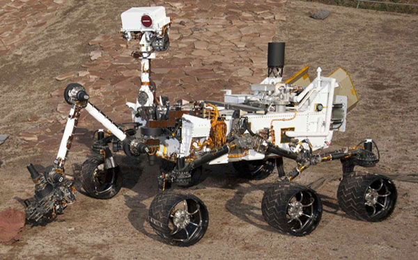

Robótica Educativa y Programación
Tipos de Robot
Un robot industrial es un manipulador multifuncional programable, capaz de mover materias, piezas, herramientas o dispositivos especiales, según trayectorias variables, programadas para realizar tareas diversas [RIA2004].
Un robots inteligente es un robot del cual se espera que aprenda y ejecute tareas aún en ambientes cambiantes. Un robot inteligente es una máquina capaz de extraer información de su ambiente y usar ese conocimiento para moverse en forma segura cumpliendo un propósito y sentido [Arkin1998].

Un robot inteligente es una criatura mecánica capaz de funcionar de manera autónoma[Murphy2000].
Obra publicada con Licencia Creative Commons Reconocimiento No comercial Compartir igual 4.0